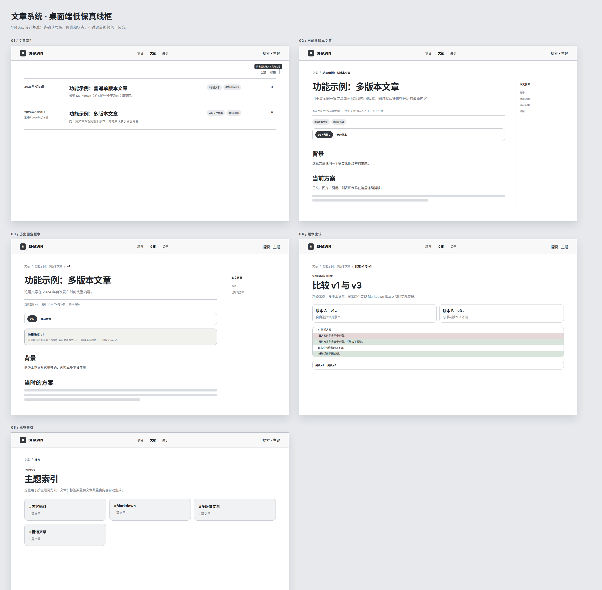
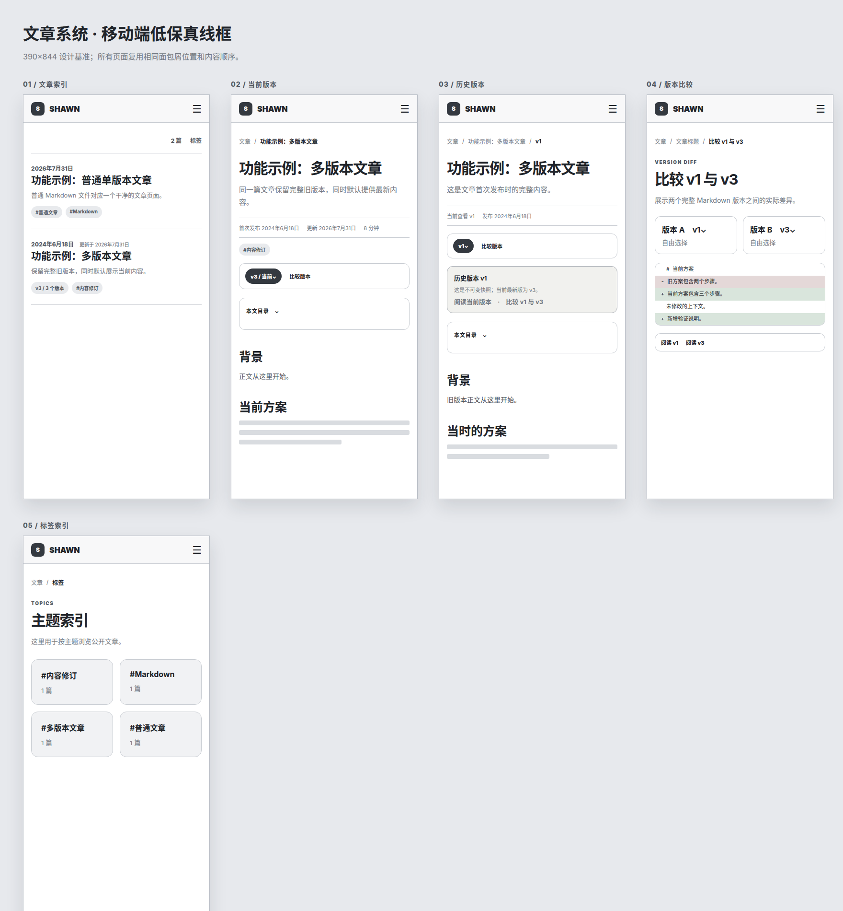

第一步 / 确认结构
先审页面身份、父子关系与版本语义，再看颜色和动效；避免用视觉修补结构问题。


第二步 / 检查线框
低保真只确认层级、位置、状态和内容顺序，不用装饰掩盖布局问题。


第三步 / 操作原型
交互原型包含七种真实页面状态。顶部评审工具条可以切换页面和深浅主题。
第四步 / 静态抽查
以下导出图用于快速审查；完整桌面与移动截图位于 exports 目录。
SSHawn9.com / DESIGN REVIEW / 2026-07-31
这是进入生产实现前的独立设计评审包。它覆盖文章索引、标签、普通文章和多版本文章的完整页面体系， 并将结构、导航、状态、响应式和视觉方向分开验证。
先审页面身份、父子关系与版本语义，再看颜色和动效；避免用视觉修补结构问题。
低保真只确认层级、位置、状态和内容顺序，不用装饰掩盖布局问题。


交互原型包含七种真实页面状态。顶部评审工具条可以切换页面和深浅主题。
以下导出图用于快速审查；完整桌面与移动截图位于 exports 目录。